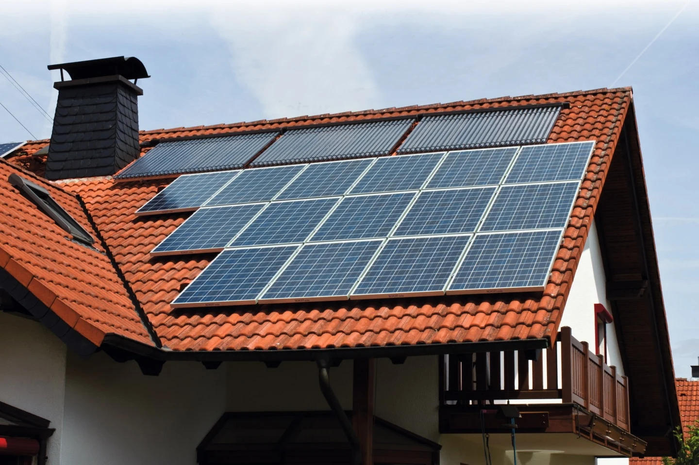

01 / SOLARNA TOPLOTA
Od sunca do tople vode.
- Solarni kolektor
- Izmenjivač i spremnik
- Topla voda / podrška grejanju
Kolektori zagrevaju medijum koji preko izmenjivača predaje toplotu vodi u spremniku.